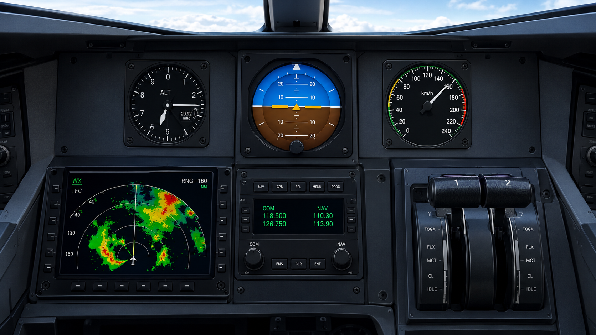

1. Altímetro.
Instrumento analógico fundamental para a navegação aérea. Mede e exibe a altitude da aeronave em pés em relação ao nível do mar (ou a um nível de referência ajustado no submostrador Kollsman) com base na pressão atmosférica.
2. Velocímetro.
Instrumento que indica a velocidade do veículo em quilômetros por hora (km/h), permitindo acompanhar a rapidez do deslocamento.
3. Horizonte Artificial.
Instrumento utilizado em aeronaves para indicar a posição e a inclinação do avião em relação ao horizonte, auxiliando o piloto a manter o controle da aeronave durante o voo.
4. Radar de Clima.
Tela digital integrada ao painel que monitora em tempo real as condições climáticas à frente da aeronave. Exibe zonas de precipitação e formações de tempestade codificadas por cores (verde, amarelo e vermelho), permitindo que os pilotos identifiquem e desviam de turbulências e áreas de clima severo.
5. Manetes de Potência.
Conjunto mecânico que controla a performance do motor e do voo. Inclui a manete de potência (Throttle) para regular o fluxo de combustível/potência do motor, a manete de passo da hélice (Propeller) para ajustar a rotação (RPM) e a manete de mistura (Mixture) para calibrar a proporção ar/combustível.